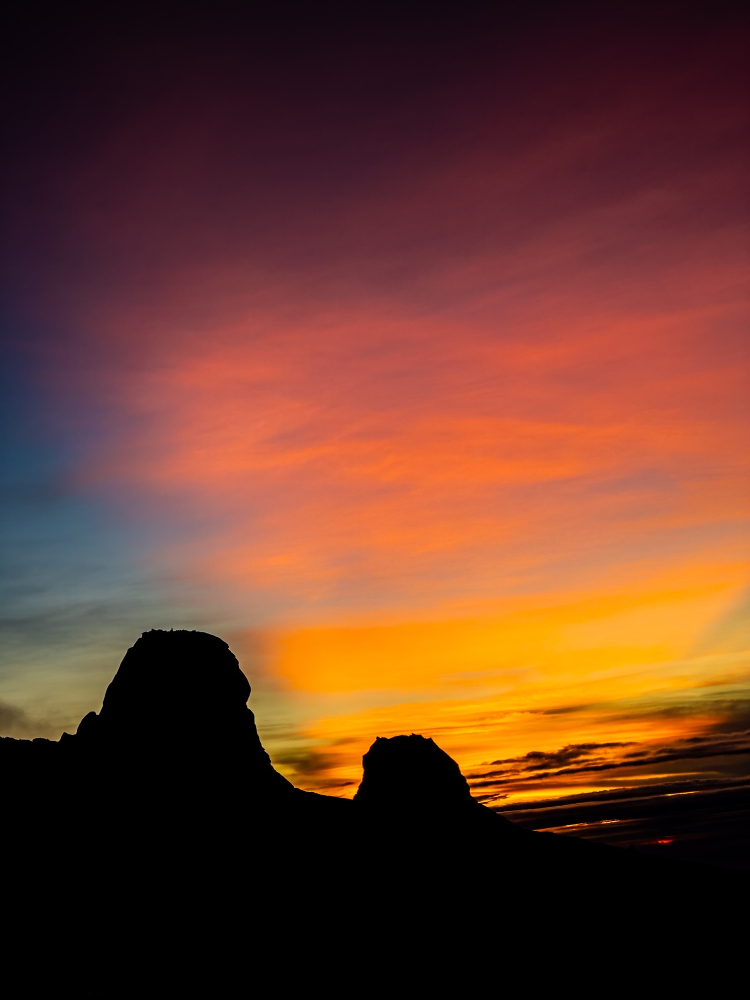
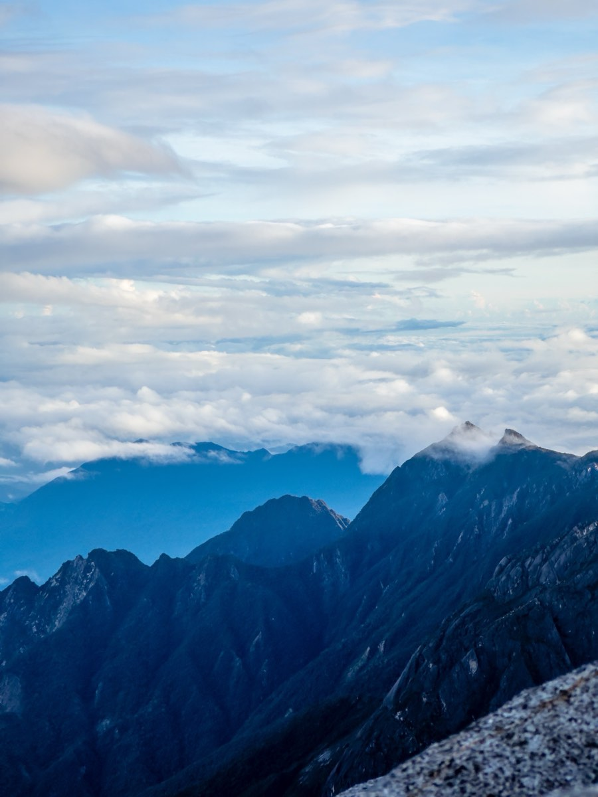
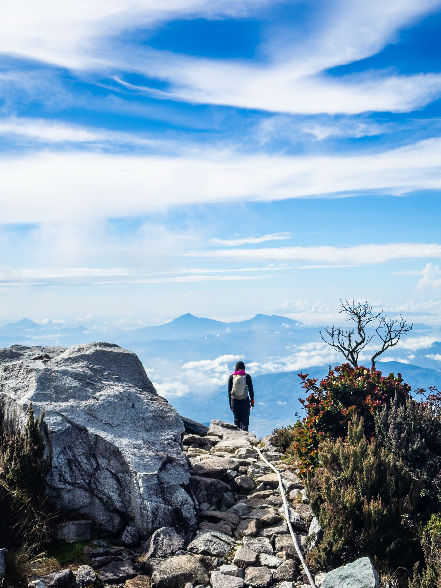
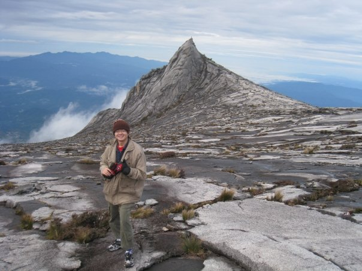
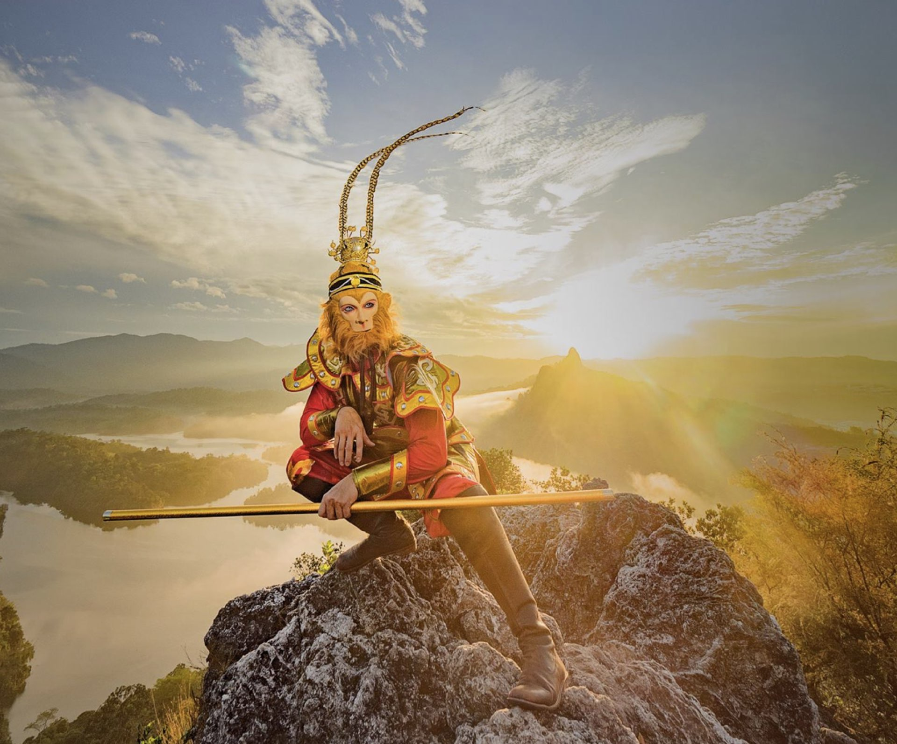
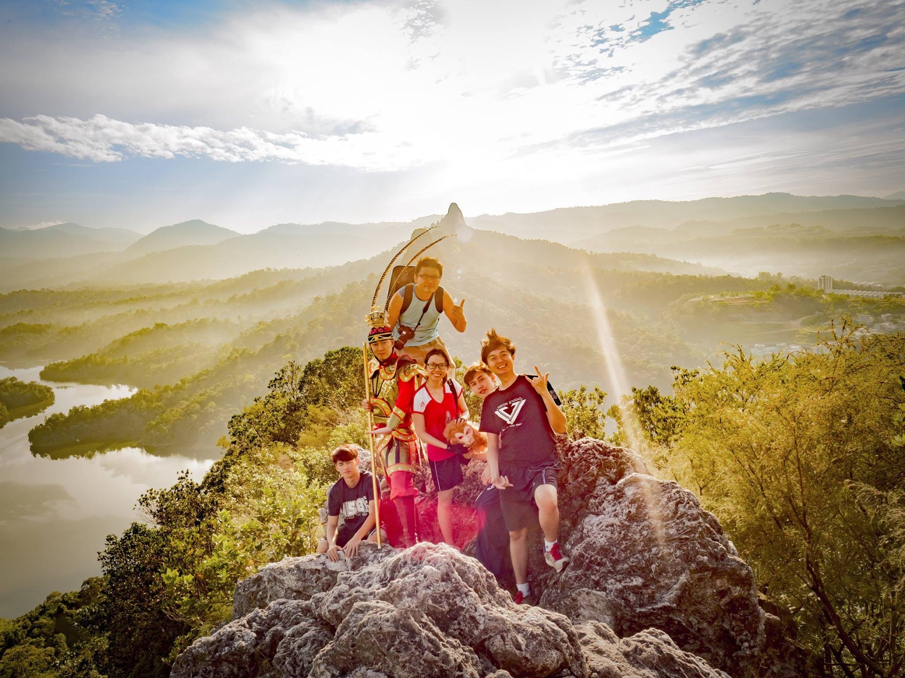
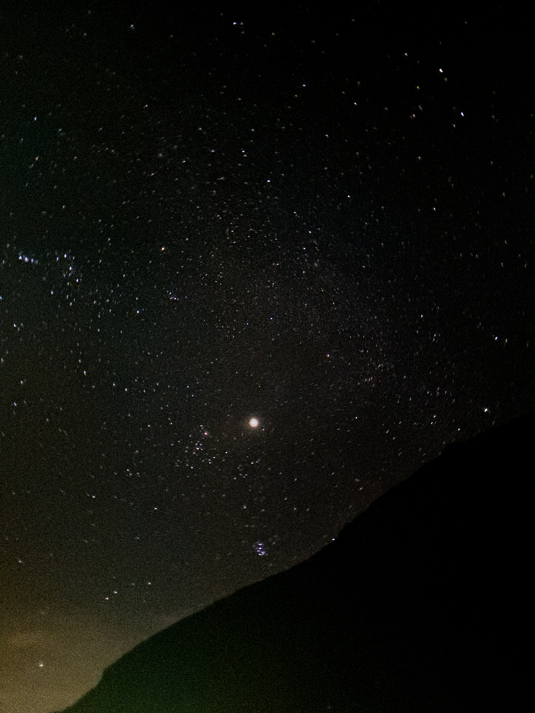

Photo Gallery
Mount Kinabalu · Through My Lens
58 photos from the climb. Tap any photo to view full screen.




A personal story about mountains, drones, friendship — and how one climb changed everything.
Some journeys change the way we see life. For me, that journey was hiking Mount Kinabalu.
This is not just a story about climbing the highest mountain in Malaysia. It is a story about how hiking, drones, friendship, and chasing meaningful experiences slowly changed my life.
My name is Kay Du — a Malaysian hiking drone creator documenting mountains, waterfalls, hidden gems, and outdoor adventures around Malaysia. And honestly, none of this was planned.
My hiking journey actually started because of my big brother, Ks Du from Vision Studio.
Around 17 years ago, he climbed Mount Kinabalu. Back then, I was still young — but hearing his stories and seeing his photos stayed in my mind for many years.

Ks Du at the summit of Mount Kinabalu · the photo that started it all
He also hiked Bukit Tabur West for a Monkey King-themed shooting project at the peak. The mountain looked insanely beautiful. It was one of the first times I realized Malaysia actually had landscapes that looked like overseas.


Bukit Tabur West · Monkey King shooting project by Ks Du / Vision Studio
Before MCO, I only hiked casually — Bukit Tabur maybe two times and Ketumbar Hill once. After that, life became busy and I stopped hiking for some time. But after MCO, everything slowly changed.
At the end of 2022, I bought my first drone: the DJI Mini 3 Pro. Honestly, I did not overthink the purchase. I simply wanted a drone because it looked fun. I flew it a few times, then left it unused.
Then in 2023, I started hiking again. At first, the reason was simple — I wanted to improve my health, release stress, and clear my mind.
"Why not use my drone to capture the beauty of Malaysia's mountains and waterfalls?"
That one small idea slowly became a huge part of my life. From there, hiking became more than just exercise. It became a way for me to explore Malaysia, tell stories, create videos, and appreciate nature in a deeper way.
At one point, I randomly gave myself 3 goals. Funny enough, these were all things my brother had already done before.
Until today, I still cannot fully explain why I wanted to chase these goals so badly. Maybe I wanted to prove something to myself. Maybe I needed purpose. Maybe I simply wanted to feel alive again. But somehow, these goals gave me hope and kept me moving forward in life.
Out of all the mountains I have explored, Mount Kinabalu feels truly different. The moment I first saw the mountain with my own eyes, I was shocked.
"Is this really Malaysia?"
The scenery honestly felt unreal. The cold air, granite landscapes, sunrise views above the clouds, and peaceful atmosphere made the entire experience feel magical. Even while hiking, I felt strangely calm inside. No stress. No pressure. Just peace.
That is something very difficult to explain unless you experience it yourself.
One of the most unforgettable moments happened during the midnight summit hike. Around 2AM while hiking toward the peak in darkness, I suddenly saw something flash across the sky.
At first, I thought my eyes were tired or maybe I was imagining things. Then suddenly, another one appeared. And another one again.
Shooting stars.
I still remember standing there quietly in shock, looking at the night sky above Mount Kinabalu. It honestly felt unreal. That moment made the entire mountain feel even more magical to me.
Far away from the city, surrounded by cold air, silence, stars, and mountains — it felt like time completely stopped for a while. It is one of those moments in life that photos and videos can never fully capture.

2AM · Milky Way above Mount Kinabalu · one of those moments that stays with you forever
The sunrise at Low's Peak is still one of the most beautiful moments I have ever witnessed in my life. And honestly, no camera can truly show how beautiful Mount Kinabalu feels in real life.
Standing above the clouds at 4,095 meters, watching the sunrise slowly appear over Sabah, makes you realize how beautiful life actually is. — Kay Du, Hiking Drone Creator
58 photos from the climb. Tap any photo to view full screen.



People spend so much time waiting for the "right moment" in life. But the truth is — life moves very fast. Many people dream about hiking Mount Kinabalu but never actually do it.
Too busy. Too tired. Too scared. Maybe next year.
But sometimes, meaningful experiences are exactly what make life memorable. That is why I truly believe everyone should hike Mount Kinabalu at least once in their lifetime. Not because it is easy. Not because it is trendy. But because the experience changes something inside you.

I even designed a So Hikers Malaysia Mount Kinabalu T-shirt. At the back of the shirt, there is one sentence:
"We Only Lived Once."
That slogan represents exactly how I see life now. Sometimes we overthink too much. Sometimes we wait too long. Sometimes fear stops us from experiencing beautiful things. But life is short. If there is something meaningful you want to do, sometimes you simply need to take the first step.
Through hiking, I met Khor Phor Xiang and together we started So Hikers Malaysia. Since then, we have organized hikes, workshops, community events, explored hidden trails, collaborated with brands, and met so many amazing people along the journey.
And somehow, it has already been more than 3 years. Until today, we are still continuing this crazy hiking journey together.
Looking back now, it feels crazy that everything started because I randomly bought a drone.
I successfully completed my Mount Kinabalu goal. ✅
For the Penang Bridge International Marathon, I managed to run 38KM instead of the full 42KM. But honestly… good enough already hahaha. I reached both sides of the bridge, so I considered it a personal achievement.
As for the Standard Chartered Marathon… that goal is still waiting for me. Maybe one day. 😄
Hiking gave me more than beautiful views. It gave me peace of mind. Purpose. Friendships. Stories. Memories. And a reason to keep moving forward.
That is why I will always recommend this to everyone:
"Because sometimes, the mountains heal parts of us that normal life cannot."
If you have the chance, go hike Mount Kinabalu at least once in your life. And maybe somewhere above the clouds, you might discover a new version of yourself too.
Download free GPX trail files for 15 Malaysian mountains and follow the 60 Mountains Challenge.
View All GPX Trails